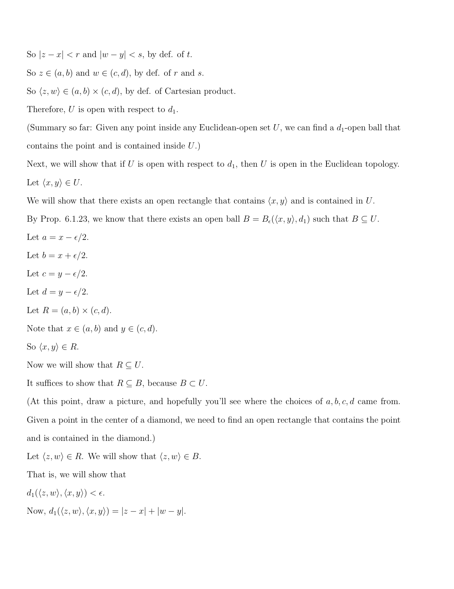
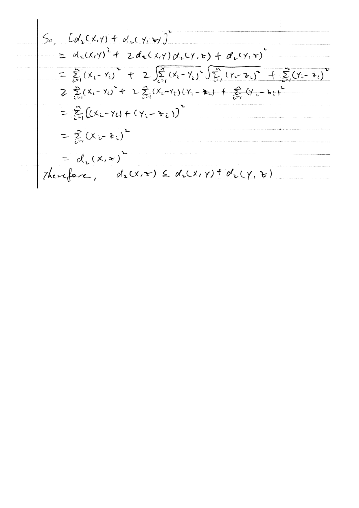

MATH 5690 (Topology) · Chapter 6 Homework
Problems first; ALL solutions together at the end. The comps problem is quoted verbatim from the CSULA topology comprehensive exam (solution by Claude - comps have no key). The assigned main-textbook problems are inlined verbatim (cropped from Morris, Topology Without Tears); official solutions are appended.
For: Quiz 4 (Mon Nov 2) · all quiz dates
Problems
Assigned problems (Chapter 6)
$\bullet$ Fall 2009 topology comps, Problem 7.
$\bullet$ Main textbook: Section 6.1 #1-4; Section 6.2 #1-3, 6; Section 6.3 #1-3.
$\bullet$ Worksheet: #1, 2, 7, 8. (A student's solution to #2 is appended.)
Comprehensive-exam problem (Fall 2009, #7) - verbatim
Prove that each metric space $\langle X,d\rangle$ is normal.
Worksheet problems - verbatim
$\bullet$ #1. Define $d_1(x,y):\mathbb{R}^n\times\mathbb{R}^n\to\mathbb{R}$ by $d_1(x,y)=\sum_{i=1}^n|x_i-y_i|$. Prove that $d_1$ is a metric on $\mathbb{R}^n$.
$\bullet$ #2. Define $d_2(x,y):\mathbb{R}^n\times\mathbb{R}^n\to\mathbb{R}$ on $\mathbb{R}^n$ by $d_2(x,y)=\sqrt{\sum_{i=1}^n(x_i-y_i)^2}$. Prove that $d_2$ is a metric on $\mathbb{R}^n$.
$\bullet$ #7. Give an example of an open set $U$ in $\mathbb{R}$ such that $\mathbb{Z}$ is a proper subset of $U$, and $U$ is a proper subset of $\mathbb{R}$.
$\bullet$ #8. This problem refers to $d_1$ and $d_2$ from Problems 1 and 2. Let $U$ be the unit ball in $\mathbb{R}^n$ with respect to $d_1$. Prove that $U$ is open with respect to $d_2$.
MAIN-TEXTBOOK PROBLEMS (Morris, Topology Without Tears - assigned exercises, verbatim)
Exercises 6.1
$\bullet$ #1. Prove that the metric $d_1$ of Example 6.1.8 induces the euclidean topology on $\mathbb{R}^2$.
$\bullet$ #2. Let $d$ be a metric on a non-empty set $X$.
(i) Show that the function $e$ defined by $e(a,b) = \min\{1, d(a,b)\}$ where $a,b \in X$, is also a metric on $X$.
(ii) Prove that $d$ and $e$ are equivalent metrics.
(iii) A metric space $(X,d)$ is said to be bounded, and $d$ is said to be a bounded metric, if there exists a positive real number $M$ such that $d(x,y) < M$, for all $x,y \in X$. Using (ii) deduce that every metric is equivalent to a bounded metric.
$\bullet$ #3.
(i) Let $d$ be a metric on a non-empty set $X$. Show that the function $e$ defined by $e(a,b) = \frac{d(a,b)}{1 + d(a,b)}$ where $a,b \in X$, is also a metric on $X$.
(ii) Prove that $d$ and $e$ are equivalent metrics.
$\bullet$ #4. Let $d_1$ and $d_2$ be metrics on sets $X$ and $Y$ respectively. Prove that
(i) $d$ is a metric on $X \times Y$, where $d(\langle x_1,y_1\rangle, \langle x_2,y_2\rangle) = \max\{d_1(x_1,x_2), d_2(y_1,y_2)\}$.
(ii) $e$ is a metric on $X \times Y$, where $e(\langle x_1,y_1\rangle, \langle x_2,y_2\rangle) = d_1(x_1,x_2) + d_2(y_1,y_2)$.
(iii) $d$ and $e$ are equivalent metrics.
Exercises 6.2
$\bullet$ #1. Let $C[0,1]$ and $d$ be as in Example 6.1.5. Define a sequence of functions $f_1, f_2, \dots, f_n, \dots$ in $(C[0,1], d)$ by $f_n(x) = \frac{\sin(nx)}{n}$, $n = 1, 2, \dots$, $x \in [0,1]$. Verify that $f_n \to f_0$, where $f_0(x) = 0$, for all $x \in [0,1]$.
$\bullet$ #2. Let $(X,d)$ be a metric space and $x_1, x_2, \dots, x_n, \dots$ a sequence such that $x_n \to x$ and $x_n \to y$. Prove that $x = y$.
$\bullet$ #3.
(i) Let $(X,d)$ be a metric space, $\tau$ the induced topology on $X$, and $x_1, x_2, \dots, x_n$ a sequence of points in $X$. Prove that $x_n \to x$ if and only if for every open set $U \ni x$, there exists a positive integer $n_0$ such that $x_n \in U$ for all $n \geq n_0$.
(ii) Let $X$ be a set and $d$ and $d_1$ equivalent metrics on $X$. Deduce from (i) that if $x_n \to x$ in $(X,d)$, then $x_n \to x$ in $(X,d_1)$.
$\bullet$ #6.
(i) Let $(X,d)$ be a metric space and $x_n \to x$ where each $x_n \in X$ and $x \in X$. Let $A$ be the subset of $X$ which consists of $x$ and all of the points $x_n$. Prove that $A$ is closed in $(X,d)$.
(ii) Deduce from (i) that the set $\{2\} \cup \{2 - \frac{1}{n} : n = 1, 2, \dots\}$ is closed in $\mathbb{R}$.
(iii) Verify that the set $\{2 - \frac{1}{n} : n = 1, 2, \dots\}$ is not closed in $\mathbb{R}$.
Exercises 6.3
$\bullet$ #1. Verify that the sequence $\{x_n = \sum_{i=0}^{n} \frac{1}{i!}\}$ is a Cauchy sequence in $\mathbb{Q}$ with the euclidean metric. [This sequence does not converge in $\mathbb{Q}$. In $\mathbb{R}$ it converges to the number $e$, which is known to be irrational. For a proof that $e$ is irrational, indeed transcendental, see Jones et al. [221].]
$\bullet$ #2. Prove that every subsequence of a Cauchy sequence is a Cauchy sequence.
$\bullet$ #3. Give an example of a sequence in $\mathbb{R}$ with the euclidean metric which has no subsequence which is a Cauchy sequence.
Solutions
My worked solutions to the comprehensive-exam problem (and any class problem with no official key) follow; the instructor's official solutions to the main-textbook / worksheet problems are appended after.
Comps Fall 2009 #7 - solution
Recall in a metric space the distance to a set, $d(x,E)=\inf\{d(x,e):e\in E\}$, is continuous in $x$, and for a closed set $E$, $d(x,E)=0 \Leftrightarrow x\in E$. First, singletons are closed, so $X$ is $T_1$; we now separate closed sets. Let $A,B$ be disjoint closed subsets of $X$. Define $U=\{x\in X: d(x,A)<d(x,B)\},\qquad V=\{x\in X: d(x,B)<d(x,A)\}.$ Both are open, being defined by a strict inequality between the two continuous functions $x\mapsto d(x,A)$ and $x\mapsto d(x,B)$ (indeed $U=\{d(x,A)-d(x,B)<0\}$, the preimage of an open ray under a continuous map). They are disjoint (the two strict inequalities cannot both hold). If $a\in A$ then $d(a,A)=0$ and, since $B$ is closed and $a\notin B$ (as $A\cap B=\emptyset$), $d(a,B)>0$; hence $a\in U$. So $A\subseteq U$, and symmetrically $B\subseteq V$. Thus $A,B$ are separated by disjoint open sets, and $X$ is normal. ∎


Chapter 6: backup solutions (Claude, not official)
Official files cover: Section 6.1 #1, Section 6.1 #4(i), Section 6.2 #6(i) (Case 2 left to the reader), Section 6.3 #3 (ch6_maintext.pdf); Worksheet #1 and #7 (ch6_worksheet.pdf); Worksheet #2 (student solution, ch6_prob2.pdf). Worksheet #8 has only a proof idea in the official file. Everything else is solved below.
Facts from Morris used below: Definition 6.1.22 (metrics are equivalent if they induce the same topology); Proposition 6.1.23 (U is open in the topology induced by d iff for each a ∈ U some ball Bε(a) ⊆ U); Proposition 6.1.17 (open balls are open); Definition 6.2.1 (convergence); Proposition 6.2.3 (A is closed iff limits of convergent sequences in A lie in A); Definition 6.3.1 (Cauchy sequence).
Comparison Lemma (used in 6.1 #2, #3, #4). Let d, d′ be metrics on X and write Br(a), B′r(a) for their balls. Suppose that for every a ∈ X and every ε > 0 there is δ > 0 with B′δ(a) ⊆ Bε(a). Then every d-open set is d′-open.
Proof. Let U be d-open and a ∈ U. By Proposition 6.1.23 there is ε > 0 with Bε(a) ⊆ U; choose δ as in the hypothesis, so B′δ(a) ⊆ Bε(a) ⊆ U. By Proposition 6.1.23 again (for d′), U is d′-open. ∎
Applying the lemma in both directions shows that d and d′ induce the same topology, i.e. are equivalent.
(i) Show that the function e defined by e(a, b) = min{1, d(a, b)} where a, b ∈ X, is also a metric on X.
(ii) Prove that d and e are equivalent metrics.
(iii) A metric space (X, d) is said to be bounded, and d is said to be a bounded metric, if there exists a positive real number M such that d(x, y) < M, for all x, y ∈ X. Using (ii) deduce that every metric is equivalent to a bounded metric.
(i) Positivity. e(a, b) = min{1, d(a, b)} ⩾ 0 since both 1 and d(a, b) are ⩾ 0. Since 1 ≠ 0, min{1, d(a, b)} = 0 iff d(a, b) = 0 iff a = b.
Symmetry. e(a, b) = min{1, d(a, b)} = min{1, d(b, a)} = e(b, a).
Triangle inequality. Let a, b, c ∈ X. If e(a, b) = 1 or e(b, c) = 1, then e(a, b) + e(b, c) ⩾ 1 ⩾ e(a, c). Otherwise e(a, b) = d(a, b) and e(b, c) = d(b, c), and then e(a, c) ⩽ d(a, c) ⩽ d(a, b) + d(b, c) = e(a, b) + e(b, c). So e is a metric. ∎
(ii) Claim: for 0 < r ⩽ 1, the e-ball and d-ball of radius r about a coincide. Indeed, if d(a, x) < r then e(a, x) ⩽ d(a, x) < r; and if e(a, x) < r ⩽ 1 then the minimum is not 1, so e(a, x) = d(a, x) < r. Now, given a and ε > 0, put δ = min{ε, 1}. Then Beδ(a) = Bdδ(a) ⊆ Bdε(a), and likewise Bdδ(a) = Beδ(a) ⊆ Beε(a). By the Comparison Lemma in both directions, d and e induce the same topology, so they are equivalent. ∎
(iii) Let d be any metric on X and e = min{1, d}. For all x, y, e(x, y) ⩽ 1 < 2, so e is bounded (M = 2). By (i) e is a metric and by (ii) it is equivalent to d. ∎
e(a, b) = d(a, b) / (1 + d(a, b))
where a, b ∈ X, is also a metric on X.
(ii) Prove that d and e are equivalent metrics.
Let φ(t) = t/(1 + t) = 1 − 1/(1 + t) for t ⩾ 0, so e = φ ∘ d. Properties of φ: φ(t) ⩾ 0 with φ(t) = 0 iff t = 0; φ(t) < 1; φ is strictly increasing (as t grows, 1/(1 + t) strictly decreases); and φ is a bijection of [0, ∞) onto [0, 1) with inverse ψ(u) = u/(1 − u).
(i) Positivity: e(a, b) = φ(d(a, b)) ⩾ 0, and e(a, b) = 0 iff d(a, b) = 0 iff a = b. Symmetry: immediate from d(a, b) = d(b, a). Triangle inequality: first, φ is subadditive: for s, t ⩾ 0,
φ(s) + φ(t) = s/(1 + s) + t/(1 + t) ⩾ s/(1 + s + t) + t/(1 + s + t) = (s + t)/(1 + s + t) = φ(s + t),
because making a positive denominator larger makes the non-negative fraction no larger. Now for a, b, c ∈ X, using d(a, c) ⩽ d(a, b) + d(b, c) and that φ is increasing,
e(a, c) = φ(d(a, c)) ⩽ φ(d(a, b) + d(b, c)) ⩽ φ(d(a, b)) + φ(d(b, c)) = e(a, b) + e(b, c).
So e is a metric. ∎
(ii) Since φ is a strictly increasing bijection [0, ∞) → [0, 1), for s > 0 we have d(a, x) < s iff e(a, x) < φ(s), i.e. Bds(a) = Beφ(s)(a); and for 0 < r < 1, e(a, x) < r iff d(a, x) < ψ(r), i.e. Ber(a) = Bdψ(r)(a).
- Given a and ε > 0, take δ = φ(ε) > 0: Beδ(a) = Bdε(a).
- Given a and ε > 0, let r = min{ε, ½} < 1 and take δ = ψ(r) > 0: Bdδ(a) = Ber(a) ⊆ Beε(a).
By the Comparison Lemma in both directions, d and e induce the same topology, so they are equivalent. ∎
(i) d is a metric on X × Y, where
d(⟨x1, y1⟩, ⟨x2, y2⟩) = max{d1(x1, x2), d2(y1, y2)}.
(ii) e is a metric on X × Y, where
e(⟨x1, y1⟩, ⟨x2, y2⟩) = d1(x1, x2) + d2(y1, y2).
(iii) d and e are equivalent metrics.
(i) is in the official file; (ii) and (iii) are solved here. Write pi = ⟨xi, yi⟩.
(ii) Positivity: e(p1, p2) is a sum of two non-negative numbers, so it is ⩾ 0, and it is 0 iff d1(x1, x2) = 0 and d2(y1, y2) = 0, iff x1 = x2 and y1 = y2, iff p1 = p2. Symmetry: from the symmetry of d1 and d2. Triangle inequality: adding d1(x1, x3) ⩽ d1(x1, x2) + d1(x2, x3) and d2(y1, y3) ⩽ d2(y1, y2) + d2(y2, y3) gives e(p1, p3) ⩽ e(p1, p2) + e(p2, p3). So e is a metric. ∎
(iii) For non-negative reals u, v: max{u, v} ⩽ u + v ⩽ 2 max{u, v}. Hence for all p, q ∈ X × Y,
d(p, q) ⩽ e(p, q) ⩽ 2 d(p, q).
Consequently, for any p and ε > 0: if e(p, q) < ε then d(p, q) < ε, so Beε(p) ⊆ Bdε(p); and if d(p, q) < ε/2 then e(p, q) < ε, so Bdε/2(p) ⊆ Beε(p). By the Comparison Lemma in both directions, d and e induce the same topology on X × Y, so they are equivalent. ∎
fn(x) = sin(nx) / n, n = 1, 2, …, x ∈ [0, 1].
Verify that fn → f0, where f0(x) = 0, for all x ∈ [0, 1].
Recall d(f, g) = ∫01 |f(x) − g(x)| dx (Example 6.1.5). Each fn is continuous on [0, 1], so fn ∈ C[0, 1], and f0 ∈ C[0, 1]. Since |sin(nx)| ⩽ 1 for all x,
d(fn, f0) = ∫01 |sin(nx)| / n dx ⩽ ∫01 (1/n) dx = 1/n,
using that the integral of continuous functions is monotone. Let ε > 0 and choose an integer n0 > 1/ε. For all n ⩾ n0, d(f0, fn) ⩽ 1/n ⩽ 1/n0 < ε. By Definition 6.2.1, fn → f0. ∎
Suppose x ≠ y. Then d(x, y) > 0; put ε = d(x, y)/2 > 0. Since xn → x, there is n1 with d(x, xn) < ε for all n ⩾ n1; since xn → y, there is n2 with d(y, xn) < ε for all n ⩾ n2. Take n = max{n1, n2}. Then
d(x, y) ⩽ d(x, xn) + d(xn, y) < ε + ε = d(x, y),
a contradiction. Hence x = y. ∎
(ii) Let X be a set and d and d1 equivalent metrics on X. Deduce from (i) that if xn → x in (X, d), then xn → x in (X, d1).
(i) (⇒) Let xn → x and let U ∈ τ with x ∈ U. By Proposition 6.1.23 there is ε > 0 with Bε(x) ⊆ U. By Definition 6.2.1 there is n0 with d(x, xn) < ε, i.e. xn ∈ Bε(x) ⊆ U, for all n ⩾ n0.
(i) (⇐) Assume the open-set condition. Let ε > 0. The ball Bε(x) is open (a basis element, Proposition 6.1.17) and contains x, so there is n0 with xn ∈ Bε(x), i.e. d(x, xn) < ε, for all n ⩾ n0. So xn → x. ∎
(ii) Since d and d1 are equivalent, they induce the same topology τ on X (Definition 6.1.22). If xn → x in (X, d), then by (i) applied to d, for every U ∈ τ with x ∈ U the sequence is eventually in U. This condition refers only to τ, which is also the topology induced by d1; so by (i) applied to d1, xn → x in (X, d1). ∎
(ii) Deduce from (i) that the set {2} ∪ {2 − 1/n : n = 1, 2, …} is closed in ℝ.
(iii) Verify that the set {2 − 1/n : n = 1, 2, …} is not closed in ℝ.
The official file does (i) by sequences but leaves Case 2 to the reader; here is a short complete proof of (i), then (ii) and (iii).
(i) We show X ∖ A is open. Let y ∈ X ∖ A. Then y ≠ x, so r = d(x, y) > 0. Since xn → x, there is n0 with d(x, xn) < r/2 for all n ⩾ n0; for such n, d(y, xn) ⩾ d(y, x) − d(x, xn) > r − r/2 = r/2 (triangle inequality). The finitely many points x1, …, xn0−1 all differ from y, so their distances to y are positive. Let
ε = min{ r/2, d(y, x1), …, d(y, xn0−1) } > 0.
Then no point of A lies in Bε(y): d(y, x) = r ⩾ ε; d(y, xn) > r/2 ⩾ ε for n ⩾ n0; d(y, xn) ⩾ ε for n < n0. So Bε(y) ⊆ X ∖ A, and by Proposition 6.1.23 X ∖ A is open; A is closed. ∎
(ii) Let xn = 2 − 1/n in ℝ with the euclidean metric. Then |xn − 2| = 1/n, so given ε > 0, taking n0 > 1/ε gives |xn − 2| < ε for n ⩾ n0; thus xn → 2. By (i), the set consisting of 2 and all xn, namely {2} ∪ {2 − 1/n : n = 1, 2, …}, is closed in ℝ. ∎
(iii) Let S = {2 − 1/n : n = 1, 2, …}. The sequence xn = 2 − 1/n lies in S and converges to 2 (see (ii)), but 2 ∉ S since 2 − 1/n < 2 for every n. By Proposition 6.2.3, S is not closed in ℝ. ∎
Each xn is a finite sum of rationals, so xn ∈ ℚ.
Step 1: i! ⩾ 2i−1 for i ⩾ 1. True for i = 1 (1 = 20); if i! ⩾ 2i−1 then (i + 1)! = (i + 1)·i! ⩾ 2·2i−1 = 2i.
Step 2. For m > n ⩾ 0,
|xm − xn| = ∑i=n+1m 1/i! ⩽ ∑i=n+1m 1/2i−1 = (1/2n)(1 + 1/2 + … + 1/2m−n−1) < 2/2n = 1/2n−1.
Step 3. Let ε > 0. Since 2k ⩾ k for all k, we can choose a positive integer n0 with 2n0−1 > 1/ε. For m, n ⩾ n0: if m = n the distance is 0 < ε; otherwise, say m > n, and by Step 2 |xm − xn| < 1/2n−1 ⩽ 1/2n0−1 < ε. So {xn} is a Cauchy sequence in ℚ (the metric on ℚ is the restriction of the euclidean metric, and all terms are in ℚ). ∎
(The bracketed remark about the limit e is information from the book, not part of what is asked.)
Let {xn} be a Cauchy sequence in (X, d) and xn1, xn2, … a subsequence, so n1 < n2 < … (Definition 6.3.5). First, nk ⩾ k for all k: n1 ⩾ 1, and if nk ⩾ k then nk+1 > nk ⩾ k, so nk+1 ⩾ k + 1.
Let ε > 0. Since {xn} is Cauchy there is n0 such that d(xm, xn) < ε for all m, n ⩾ n0. If k, l ⩾ n0, then nk ⩾ k ⩾ n0 and nl ⩾ l ⩾ n0, so d(xnk, xnl) < ε. Hence the subsequence is a Cauchy sequence. ∎
The official file gives only the idea ("fit a disc inside the diamond"); here are the details. Here U = {z ∈ ℝn : d1(z, 0) < 1}, where 0 is the origin. (The same proof works for the d1-ball of radius 1 about any centre c, replacing 0 by c.)
Key inequality. For all y, z ∈ ℝn, d1(y, z) ⩽ n·d2(y, z). Indeed, for each i, |yi − zi| = √((yi − zi)2) ⩽ √(∑j=1n (yj − zj)2) = d2(y, z), since adding non-negative terms under the square root cannot decrease it; summing over i = 1, …, n gives the claim.
Proof. Let x ∈ U and put r = 1 − d1(x, 0) > 0. Let δ = r/n > 0. If y ∈ ℝn with d2(y, x) < δ, then d1(y, x) ⩽ n·d2(y, x) < nδ = r, so by the triangle inequality for d1 (Worksheet #1),
d1(y, 0) ⩽ d1(y, x) + d1(x, 0) < r + d1(x, 0) = 1,
i.e. y ∈ U. Thus the d2-ball Bδ(x) (a round ball, a disc when n = 2) is contained in U. Since x ∈ U was arbitrary, U is open with respect to d2 by Proposition 6.1.23. ∎